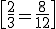
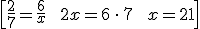
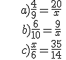

Proporcionalidad
Razón y proporción
Una razón es una comparación entre dos números. Normalmente separamos los dos números con dos puntos (:) o los escribimos como fracción.
Ejemplo: Supongamos que queremos escribir una razón de 8 a 12. Podemos escribirlo como 8:12 o como 8/12.
Simplificamos razones como simplificamos fracciones.
Ejemplo: 8:12 es equivalente a 2:3
Una proporción es una igualdad con una razón en cada miembro.
Ejemplo:

Se lee “2 es a 3 lo que 8 es a 12”
Cuando uno de los cuatro números de la proporción es desconocido, usamos el producto en cruz para averiguarlo. Ejemplo:

Ejercicio. Encuentra el valor de x en cada proporción:

Soluciones: a) x = 45; b) x = 15; c) x = 15
Obra publicada con Licencia Creative Commons Reconocimiento No comercial Compartir igual 4.0